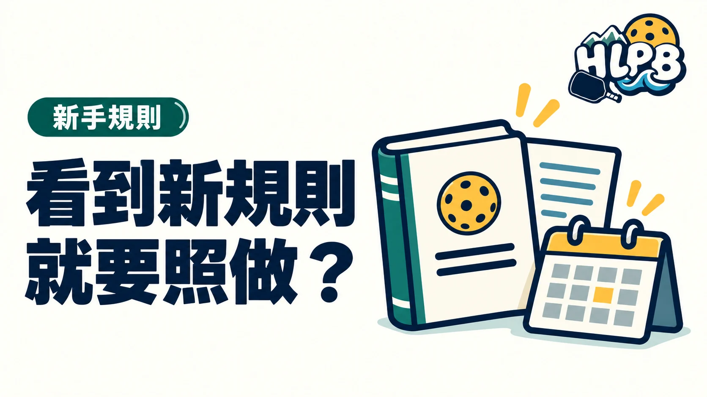

規則提案、審議通過與正式生效，是三個不同階段。看見社群轉貼修改內容，不代表今天的比賽已經採用，也不代表所有賽事都同時更換版本。
先辨認自己看到哪種資料
| 資料類型 | 應核對的內容 |
|---|---|
| 修改提案 | 是否仍在討論、投票或審查 |
| 通過消息 | 正式公告及生效日期 |
| 年度規則書 | 年份、版本與適用範圍 |
| 賽事章程 | 主辦單位實際採用的規則 |
USA Pickleball 的修訂流程另有年度時程。與其只記某個預計日期，更重要的是回到正式流程及最後公布的年度規則書。規劃中的修改內容，不應寫成目前已生效的判罰。
截圖少了什麼，就容易誤讀？
截圖可能缺少標題、年度、修訂狀態與原始連結；同一段文字也可能是提案者的建議，而不是規則制定單位的結論。核對時把整份文件的身分看清，比只搜尋一句關鍵字可靠。
到球場上，如何處理不同版本？
HLPB 建議正式比賽先查章程，休閒練習則在開打前說明採用版本。若有人提出新判法，先找原文與生效依據，不必以影片觀看次數或轉貼人數決定誰對。
本文解釋查核方法，不宣稱任何尚未核定的下一年度修改已經上路。
內容更新：2026-10-20｜資料來源：USA Pickleball 官方資料；USA Pickleball 官方資料